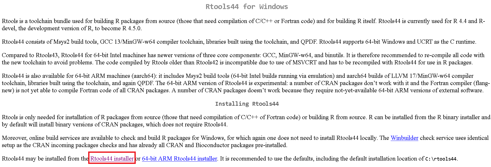

Banco de preguntas y errores frecuentes
Última actualización: 2024-12-17 | Mejora esta página
Hoja de ruta
Preguntas
- ¿Tiene algunas dificultades con el código en R?
Objetivos
- En este documento usted podrá encontrar algunas de las preguntas y errores frecuentes de la ejecución del código en R.
Banco de preguntas
¿Es necesario RTools?
Hay varios problemas comunes en R que pueden requerir la instalación de Rtools.
Instalación de paquetes que requieren compilación: Algunos paquetes de R necesitan ser compilados desde el código fuente, lo cual requiere herramientas de compilación que Rtools proporciona.
Dependencias de C, C++ o Fortran: Si desea instalar paquetes que dependen de código escrito en C, C++ o Fortran, necesitará Rtools para compilar estos componentes.
Errores de compilación: Si encuentra errores durante la instalación de paquetes que mencionan problemas de compilación, Rtools puede resolver estos problemas al proporcionar las herramientas necesarias.
Desarrollo de paquetes personalizados: Si está desarrollando su propio paquete de R y necesita compilar código fuente, Rtools es esencial para este proceso.
¿Cómo instalar RTools?
Antes de empezar por favor revise que cuenta con permisos de administrador en el computador o laptop.
Instalación de Rtools
La instalación de Rtools depende del sistema operativo que este utilizando
Windows
1. Verifique que versión de R tiene:
En la consola de R escriba y ejecute este comando:
R
sessionInfo()
SALIDA
R version 4.4.2 (2024-10-31)
Platform: x86_64-pc-linux-gnu
Running under: Ubuntu 22.04.5 LTS
Matrix products: default
BLAS: /usr/lib/x86_64-linux-gnu/blas/libblas.so.3.10.0
LAPACK: /usr/lib/x86_64-linux-gnu/lapack/liblapack.so.3.10.0
locale:
[1] LC_CTYPE=C.UTF-8 LC_NUMERIC=C LC_TIME=C.UTF-8
[4] LC_COLLATE=C.UTF-8 LC_MONETARY=C.UTF-8 LC_MESSAGES=C.UTF-8
[7] LC_PAPER=C.UTF-8 LC_NAME=C LC_ADDRESS=C
[10] LC_TELEPHONE=C LC_MEASUREMENT=C.UTF-8 LC_IDENTIFICATION=C
time zone: UTC
tzcode source: system (glibc)
attached base packages:
[1] stats graphics grDevices utils datasets methods base
loaded via a namespace (and not attached):
[1] compiler_4.4.2 tools_4.4.2 yaml_2.3.10 knitr_1.49 xfun_0.49
[6] renv_1.0.11 evaluate_1.0.1Obtendrá una información similar a esta. En este caso la versión es 4.4.1
2. Visite la página de RTools en CRAN en el navegador de su
preferencia: https://cran.r-project.org/bin/windows/Rtools/ y
seleccione la versión de Rtools que se ajuste a la versión actual de R
que tiene en su máquina y a la arquitectura de su computador. O de click
en alguno de los siguientes enlaces para descargar el instalador:
| Para versiones de R… | Installar: |
|---|---|
| Desde 4.4.0 | RTools 4.4 |
| Desde 4.3.0 | RTools 4.3 |
| Que empiezan por 4.2. | RTools 4.2 |
| Entre 4.0.0 a 4.1.3 | RTools 4.0 |
| Anteriores a 4.0.0 | versiones antiguas RTools |
3. En la página de descarga, busque la frase: "may
be installed from the" y de clic en Rtools44
installer o en la versión que haya seleccionado
anteriormente RtoolsXX installer.

4. Espere a que finalice la descarga y ejecute el archivo.
5. Haga clic en "Next" o "Siguiente" para todas las opciones que se muestran en pantalla.
Mac
En Mac, solamente necesita instalar Xcode Command Line Tools.
1. Haga clic en Búsqueda de Spotlight en la parte superior derecha de la pantalla, luego busque “Terminal”.
2. Abra una terminal o línea de comandos en su máquina.
3. En la terminal copie y pegue el siguiente comando:
xcode-select –install
4. Probablemente necesite proporcionar su contraseña para instalar el software.
5. Siga las instrucciones que aparecen en la terminal y espere hasta que finalice la instalación.
También puede hacerlo directamente desde R como explican en este video: Instalación usando R
¿Cómo instalar un paquete o “librería” en R?
Para instalar un paquete en R puede hacerlo a través de:
- Le recomendamos que lo haga a través de la función:
R
install.packages("paquete")
Algunos paquetes que están en su fase de desarrollo pueden ser instalados desde la última versión en github u otras ubicaciones utilizando los paquetes remotes o pak.
- Otra opción es usar la función require:
R
if (!require("paquete")) {
install.packages("paquete")
}
Esta opción es útil porque instala el paquete si no está previamente instalado. Se puede combinar con remotes o pak
-
Usar la interfaz de RStudio:
Haga click en la ventana
PackagesPresione el botón
InstallEscriba el nombre del (de los) paquete(s) a instalar
Presione botón
Install.
¿Cómo usar una función?
Si la función pertenece a un paquete de R, puede hacerse de dos formas:
- Llamar el nombre del paquete de R y poner dos veces dos puntos
(::)y en seguida llamar el nombre de la función. Ahora debe diligenciar los argumentos
R
paquete::nombre_de_la_funcion(argumentos)
- Cargar el paquete de R con
library:
R
library("paquete")
y una vez cargada. Llamar el nombre de la función y diligenciar los argumentos
R
nombre_de_la_funcion(argumentos)
Es importante tener previamente el paquete instalado. Si tiene dudas vaya a ¿Cómo instalar un paquete en R?
- Si la función fue creada por usted y se encuentra en el ambiente global:
Simplemente llame la función por su nombre y proporcione los argumentos necesarios:
R
nombre_de_su_funcion(argumentos)
¿Cómo cargar un paquete o “librería”?
Algunas opciones para cargar un paquete son:
- La recomendada es utilizar la función library:
R
library("paquete")
-
Utilizando la interfaz de RStudio:
Vaya a la sección derecha inferior a la pestaña
PackagesDe click en el cuadro frente a cada función, esto activará la función
library.
¿Si cargo las librerías debo cargarlas cada vez que vaya a usar la función?
No, solo es necesario cargarlas una vez por sesión de R. Sin embargo, si cerro su RStudio o abrió un nuevo proyecto, cuenta como una nueva sesión y, por lo tanto, debe cargarlas de nuevo para poder trabajar.
¿Puedo desactivar una librería que ya cargué sin reiniciar R?
Si, es posible mediante dos opciones:
- Utilice la función
detach
R
detach("package:paquete", unload = TRUE)
-
Utilizando la interfaz de RStudio:
Vaya a la sección derecha inferior a la pestaña
PackagesDe click en el cuadro frente a cada función (si el cuadro tiene un visto, el paquete está cargado; si el cuadro está vacío, el paquete no está cargado), esto activará la función
detach. Advertencia: Si presiona el simbolo de x al lado del paquete lo desinstalará.
No se creó el objeto o función
Esto puede ocurrir por varios motivos:
- Ejecución incompleta del código: El motivo más frecuente es que no se haya ejecutado el código parcial o totalmente. Asegúrese de ejecutar el script completo para que todas las líneas de código se ejecuten en el orden correcto. Para crear el objeto, asegúrese de haber realizado una de estas dos acciones:
escriba el código en la consola y ejecute (presionando
Enter)o que en el script o Chunck de RMarkdown presione
Control+Enteren Windows oCommand+Enteren Mac.
Si el objeto o función se creó correctamente, aparecerá en el ambiente global (Enviroment) ubicado en la zona superior lateral derecha.
Falta algún paquete necesario: Revise que todas los paquetes o librerías necesarios estén cargados al inicio del script.
Errores en el código: Verifique que no haya errores que impidan que el código se ejecute correctamente. Al ejecutar el código en la consola, aparecerán algunas alertas de errores que pueda tener el código.
Recomendación
Siempre observe la consola (console) para verificar si:
- El código se ejecutó correctamente. En caso de que no se haya
ejecutado, puede volver a ejecutarlo.
- Si aún se está ejecutando algún comando y aparece el símbolo rojo de
stop. En este caso, espere a que R termine el proceso
antes de ejecutar otros comandos.
- Si ha ocurrido algún error. Revise los errores o advertencias, ya
que esto puede darle pistas sobre cómo solucionar el problema.
No veo el resultado de mi código
Esto puede ocurrir por varios motivos:
-
Si guardo el resultado usando el símbolo de asignación (ej.
nombre <- "Laura"). Este aparecerá en el ambiente global (zona superior lateral derecha) y no se ejecutará en la consola a menos que se llame el objeto, es decir,se ponga el nombre del objeto en la consola y se ejecute (presionando
Enter)o que en el script o Chunck de RMarkdown se presione
Control + Enteren Windows oCommand + Enteren Mac.
Falta alguna librería necesaria. Revise que todas las librerías necesarias estén cargadas al inicio del script.
Hay errores en el código. Verifique que no haya errores que impidan que el código se ejecute correctamente. Al ejecutar el código en la consola le aparecerán algunas alertas de errores que pueda tener el código.
El script no se ha ejecutado completamente. Asegúrese de ejecutar el script completo para que todas las líneas de código se ejecuten en el orden correcto.
Errores frecuentes al usar ggplot
-
Sintaxis incorrecta:
Usar
++en lugar de+para concatenar funciones.También puede ocurrir que el
+queda en la línea de abajo, es importante destacar que para concatenar funciones debe estar al terminar la línea anterior a la que se quiere concadenar.
-
No especificar estéticas (aesthetics):
- No incluir
aes(). - No definir
aes()correctamente, por ejemplo, no indicar x o y. - Si bien aes en algunos casos puede ir en la parte inicial, la geometría o estar dividido en secciones, es fundamental que siempre este presente.
- No incluir
Datos no presentes:
La columna mencionada en aes() no existe en el conjunto de datos.
Usar el nombre incorrecto, recuerde que R es sensible a mayúsculas y
minúsculas por los tanto VariableX es diferente a
variableX o a variablex.
- Falta de librerías:
Antes de trabajar con ggplot siempre recuerde cargar la
librería con library:
R
library(ggplot2)
- Errores en
geom:
Seleccionar la geom incorrecta para el tipo de datos que se desea representar.
### `filter` no funciona
Esto puede ocurrir por varios motivos:El paquete
dplyrno está cargada. Aseguresé de incluirlibrary(dplyr)olibrary(tidyverse)en su script, y ejecutarlo cada nueva sesión.Hay conflictos de nombres de funciones con otros paquetes. Use
dplyr::filter()para especificar qué quiere utilizar la funciónfilterdedplyr.Los datos pueden no estar en el formato esperado. Verifique que la columna que está filtrando existe y tiene los valores adecuados.
filter acepta condiciones lógicas para seleccionar
filas. Veamos unos ejemplos:
- Valores específicos:
R
covid19 %>% filter(estado == "Fallecido")
- Rangos de valores:
R
covid19 %>% filter(fecha_de_notificacion >= "2020-01-01" & fecha_de_notificacion <= "2020-12-31")
- Condiciones múltiples:
R
covid19 %>% filter(estado == "Fallecido" & nombre_del_pais == "Colombia")
- Condiciones con funciones:
R
covid19 %>% filter(grepl("Colombia", nombre_del_pais))
Para saber más sobre filter consulte la documentación.
¿Dónde está el objeto que cree?
Cuando se crea un objeto este se almacena en el ambiente global. Podemos ver el ambiente global en la interfaz de R ubicado en la parte superior lateral derecha.
No funciona el pipe %>%
Recuerde los siguientes puntos:
- Es importante cargar previamente una librería que contenga el pipe.
Por ejemplo:
magrittr,dplyr,tidyropurrr. - El pipe debe ir al final de la línea que se va a conectar. No al inicio de la línea conectada:

¿Cómo evitar accidentes?
Cuando se va a almacenar cambios en el objeto donde esta almacenado el dataframe, es recomendable tener algunas precauciones para evitar perder información:
- Crear un respaldo de los datos en objetos:
o Hacer copias de seguridad regularmente durante el proceso. Se recomienda hacer una copia inicial para evitar cargar la base de nuevo. Tras hacer algunos procesos, en especial, aquellos que consumen tiempo se recomienda crear respaldos. Puede crear tanto como considere convenientes. Se recomienda crear notas para identificar cada proceso
- Crear un respaldo de los datos en archivos:
o Al igual que guardar en objetos, es buena idea guardar los datos que ya han pasado algunos procesos en el disco del computador. Esto evita que si se bloquea la sesión o se apaga el computador los datos procesados estén resguardados. Cada cuanto se deben almacenar depende de quién realiza el procesamiento.
- Pruebas antes de almacenar:
o Realizar pruebas de los cambios deseados antes de guardarlos definitivamente.
o Ejemplo: Si se quiere transformar una variable a numérica, antes
de almacernarla y terminar teniendo NAs no deseados en los
datos, es recomendable hacer una prueba antes de si se originaran esos
NAs
- Crear variables de respaldo:
o Algunas veces cuando vamos a transformar una variable es mejor crear una nueva que almacene el contenido de la transformación. Esto evita el riesgo de pérdida de información al transformar una variable.

- Cuidado al almacenar:
o No almacenar tablas u objetos transformados accidentalmente.
o Ej. si creamos una tabla para ver si la variable cambio como se deseaba y luego reutilizamos el código y añadimos la asignación adelante, almacenaríamos la tabla y perderíamos la información que tenía el objeto
Mi dataframe cambió inesperadamente
Cuando tenemos accidentes con nuestros datos algunas opciones son:
- Revisar cual es el daño y ver si es reparable. Por ejemplo, se cambió el carácter incorrecto en una cadena de texto.
- Cargar los datos a partir de un respaldo. Si hemos creado respaldos del proceso podemos evitarnos tiempos largo de procesamiento. Entre estos respaldos están las variables de respaldo o los objetos de respaldo (ver ¿Cómo evitar accidentes?).
Uso de la función rename
1. Llame la base de datos
R
datos
2. Use el pipe%>% para enlazarlo a la función
rename
3. Llame la función rename y escriba primero el
nuevo nombre de la columna y después el nombre de la columna
preexistente a la que quiere cambiar el nombre
R
datos <- datos %>% rename(nombrenuevo = nombreantiguo)
n. Seleccionar algunas filas de un grupo de datos
1. Llame la base de datos
R
datos
2. Use el pipe %>% para enlazarlo a la función
group_by
R
datos %>% group_by(variable_grupo)
La función group_by creará grupos de datos según una
variable determinada en los cuales puede realizar otras acciones como
por ejemplo seleccionar los datos en el encabezado de cada grupo.
4. Enseguida use la función como en este ejemplo podríamos usar
head solo para los datos del encabezado de cada grupo.
R
datos <- datos %>% group_by(variabledeinteres) %>% head()
¿Cómo usar summarise?
1. Llame la base de datos
R
datos
2. Use el pipe%>%para enlazarlo a la función
summarise
R
datos %>% summarise()
La función summarise no puede utilizarse de forma directa, por lo tanto, debe usarse junto a un argumento adentro, por ejemplo:
a. Obtener el promedio
R
datos %>%
summarise(mean = mean(variabledeinteres))
b. Obtener la desviación estandar
R
datos %>%
summarise(sd = sd(variabledeinteres))
Esta función puede usarse con agrupación previa
(group_by) para obtener estos valores por cada grupo, por
ejemplo,
R
datos %>% group_by(pais) %>%
summarise(
mean = mean(variabledeinteres),
sd = sd(variabledeinteres))
Errores relacionados a grupos (group_by y ungroup)
- Un error muy frecuente es que se almacena el objeto agrupado
(
group_by), dado que no se realizó la acción de desagrupar al final. Esto puede generar errores como cálculos incorrectos, resúmenes por grupo en lugar de sobre la totalidad de los datos, y problemas al realizar operaciones subsecuentes en el conjunto de datos. Por ello, recomendamos siempre emplear (ungroup) antes de almacenar. Para usarungroup()basta con ponerlo al final.
R
datos <- datos %>%
group_by(categoria) %>%
procesamiento_de_datos(...) %>%
ungroup()
Veamos un ejemplo de un error que puede ocurrir por no desagrupar:
R
library("tidyverse")
set.seed(123) # Para reproducibilidad
#dataframe de ejemplo
tipo_sanguineo <- c("A", "B", "O","AB")
rh <- sample(c("+", "-"), 10, replace = TRUE)
dia <-c(1:5)
f_latidos <- sample(60:100, 200, replace = TRUE)
f_respiratoria <- sample(12:20, 200, replace = TRUE)
df <- data.frame(tipo_sanguineo, rh, dia, f_latidos, f_respiratoria)
#resumen por columnas
por_dia <- df %>%
group_by(tipo_sanguineo,rh, dia) %>%
summarize(
f_l = mean(f_latidos),
f_r = mean(f_respiratoria)
)
Creemos una variable que contenga id únicos por cada fila
R
por_dia %>% mutate(id = row_number())
SALIDA
# A tibble: 20 × 6
# Groups: tipo_sanguineo, rh [8]
tipo_sanguineo rh dia f_l f_r id
<chr> <chr> <int> <dbl> <dbl> <int>
1 A + 1 76.3 15.2 1
2 A + 3 81.5 16.6 2
3 A + 4 81.2 15.6 3
4 A + 5 81 15.9 4
5 A - 2 78.3 16.2 1
6 AB + 2 79.3 16 1
7 AB + 5 73.1 17.4 2
8 AB - 1 83 16.6 1
9 AB - 3 79.8 15 2
10 AB - 4 84.8 17.4 3
11 B + 2 77.8 16.4 1
12 B + 5 83.8 14.6 2
13 B - 1 74.5 14.9 1
14 B - 3 85.1 16.2 2
15 B - 4 83.3 16.6 3
16 O + 1 80.3 15 1
17 O + 3 78.9 14.8 2
18 O + 4 81.2 14.9 3
19 O + 5 84.9 15 4
20 O - 2 80.7 16.1 1Cómo puede observar en la columna id en lugar de identificadores únicos tenemos id que se repiten. ¿Por qué sucedió si cada fila es diferente?
La razón a este problema subyace en que los datos siguen agrupados.
Aún si no aplicamos directamente el ungroup como se explico
antes, todavía podemos solucionarlo.
Veamos como no se solucionaría primero. Un error frecuente al tratar de solucionar este problema es aplicar la función ungroup sin almacenar el resultado.
R
# aplicación equivocada de ungroup
por_dia %>% ungroup()
SALIDA
# A tibble: 20 × 5
tipo_sanguineo rh dia f_l f_r
<chr> <chr> <int> <dbl> <dbl>
1 A + 1 76.3 15.2
2 A + 3 81.5 16.6
3 A + 4 81.2 15.6
4 A + 5 81 15.9
5 A - 2 78.3 16.2
6 AB + 2 79.3 16
7 AB + 5 73.1 17.4
8 AB - 1 83 16.6
9 AB - 3 79.8 15
10 AB - 4 84.8 17.4
11 B + 2 77.8 16.4
12 B + 5 83.8 14.6
13 B - 1 74.5 14.9
14 B - 3 85.1 16.2
15 B - 4 83.3 16.6
16 O + 1 80.3 15
17 O + 3 78.9 14.8
18 O + 4 81.2 14.9
19 O + 5 84.9 15
20 O - 2 80.7 16.1R
# si bien desagrupa el objeto para imprimirlo,
# mientras no se almacene el objeto serguirá agrupado
por_dia %>% mutate(id = row_number())
SALIDA
# A tibble: 20 × 6
# Groups: tipo_sanguineo, rh [8]
tipo_sanguineo rh dia f_l f_r id
<chr> <chr> <int> <dbl> <dbl> <int>
1 A + 1 76.3 15.2 1
2 A + 3 81.5 16.6 2
3 A + 4 81.2 15.6 3
4 A + 5 81 15.9 4
5 A - 2 78.3 16.2 1
6 AB + 2 79.3 16 1
7 AB + 5 73.1 17.4 2
8 AB - 1 83 16.6 1
9 AB - 3 79.8 15 2
10 AB - 4 84.8 17.4 3
11 B + 2 77.8 16.4 1
12 B + 5 83.8 14.6 2
13 B - 1 74.5 14.9 1
14 B - 3 85.1 16.2 2
15 B - 4 83.3 16.6 3
16 O + 1 80.3 15 1
17 O + 3 78.9 14.8 2
18 O + 4 81.2 14.9 3
19 O + 5 84.9 15 4
20 O - 2 80.7 16.1 1Como puede observar el problema no se ha corregido.
Para corregirlo podemos o incluir el ungroup desde el
inicio cuando creamos el objeto por_dia, o aplicar el
cambio y guardarlo en el objeto:
R
#ahora estamos almacenando el desagrupamiento
por_dia_sin_grupo <- por_dia %>% ungroup()
por_dia_sin_grupo %>% mutate(id = row_number())
SALIDA
# A tibble: 20 × 6
tipo_sanguineo rh dia f_l f_r id
<chr> <chr> <int> <dbl> <dbl> <int>
1 A + 1 76.3 15.2 1
2 A + 3 81.5 16.6 2
3 A + 4 81.2 15.6 3
4 A + 5 81 15.9 4
5 A - 2 78.3 16.2 5
6 AB + 2 79.3 16 6
7 AB + 5 73.1 17.4 7
8 AB - 1 83 16.6 8
9 AB - 3 79.8 15 9
10 AB - 4 84.8 17.4 10
11 B + 2 77.8 16.4 11
12 B + 5 83.8 14.6 12
13 B - 1 74.5 14.9 13
14 B - 3 85.1 16.2 14
15 B - 4 83.3 16.6 15
16 O + 1 80.3 15 16
17 O + 3 78.9 14.8 17
18 O + 4 81.2 14.9 18
19 O + 5 84.9 15 19
20 O - 2 80.7 16.1 20Como puede observar ahora si tenemos cada fila con su propio id.
Advertencia: Es importante aclarar que el desagrupamiento en los escenarios anteriores iría después de la operación, sin embargo, en este caso iría antes de la operación.
Cuando trato de crear un pdf en RMarkdown me sale error
Si el archivo sale correctamente en otros formatos a excepción de pdf. Una de las situaciones más frecuentes es que falte la instalación de LaTeX: RMarkdown necesita LaTeX para generar PDFs. Asegúrese de tener LaTeX instalado en su sistema.
Para instalar LaTeX desde RStudio, puede usar el paquete TinyTeX:
R
install.packages("tinytex")
tinytex::install_tinytex()
Configure RStudio:
Vaya a Tools > Global Options > Sweave.
Asegúrese de que la opción “Typeset PDF” esté configurada para usar TinyTeX.
Material adicional que puede aportar a su aprendizaje:
Manejo de datos con Tidyverse y R:
https://www.youtube.com/watch?v=6STcQVX8Hk0
Puntos Clave
Si después de buscar en esta guía sus preguntas no encontro respuesta por favor diligencie el siguiente formulario Dudas por resolver
Contribuciones
José M. Velasco-España: Versión inicial
Andree Valle-Campos: Ediciones menores
Laura Gómez-Bermeo: Ediciones menores
Geraldine Gomez: Ediciones menores